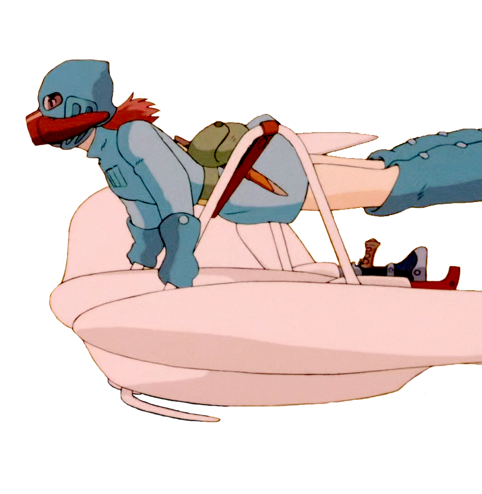
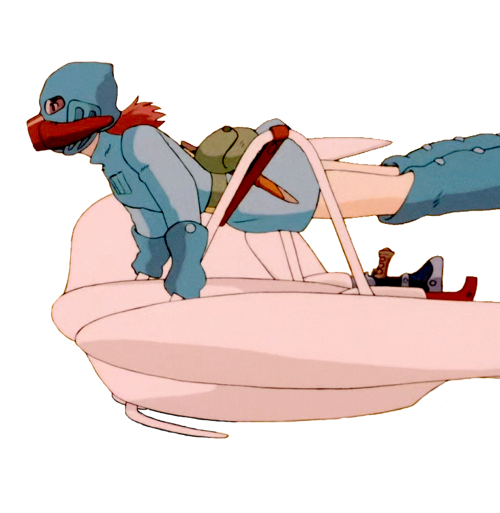

Director: Hayao Miyazaki
Released: 2008
Starring: Tomoko Yamaguchi, Kazushige Nagashima, Yuki Amami, George Tokoro, Yuria Nara, Hiroki Doi, Rumi Hiiragi, Akiko Yano, Kazuko Yoshiyuki, Tomoko Naraoka
Ponyo tells the story of a goldfish named Ponyo who befriends a five-year-old human boy, Sosuke. Ponyo dreams of becoming a real human child.